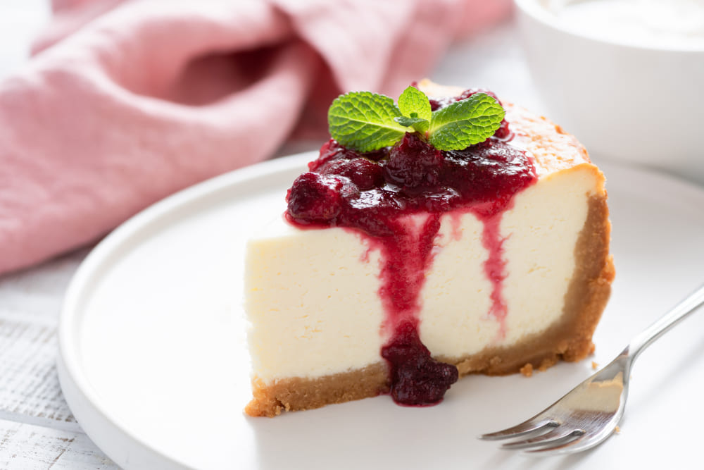

BELGICKÉ WAFLE
Ingridients: múky, maslo, kryštálový cukor, vajcia, mlieko, vanilkový cukor, prášok do pečiva
Zmäknuté maslo utrite s cukrom, vmiešajte vajcia a premiešajte. Pridáme múku a prášok do pečiva, premiešame.
Prilejte teplé mlieko a znova premiešajte.
Cesto by malo mať konzistenciu hustej kyslej smotany. Cesto nechajte na stole 15 minút. Pred pečením vafle ešte raz premiešajte.
Na minútu predhrejte vaflovač. Cesto nalejte na taniere malou naberačkou. Vafle pečte, kým sa indikátor nevypne alebo približne 4 minúty.
Belgické vafle podávajte horúce. Tieto vafle chutia dobre s džemom, zahusteným mliekom, kyslou smotanou, horúcou čokoládou, banánmi, lesným ovocím atď.
BROWNIE
Ingridients: maslo, kakao, cukor, múky, prášok do pečiva
Rozpustite maslo akýmkoľvek spôsobom.
Pridajte kakaový prášok a dobre premiešajte.
Vajcia vyšľahajte s cukrom a pridajte do čokoládovej zmesi, šľahajte metličkou alebo mixérom pri nízkych otáčkach.
Pridajte múku a prášok do pečiva, dobre premiešajte.
Pečte 25 minút pri teplote 180 stupňov.
Podávajte úplne vychladnuté.
CHEESECAKE
Ingridients: maslo, sušienky, cukor, soľ, smotanový syr (izbovej teploty), citrónovú kôru, citrónovej šťavy, soľ, veľké vajcia, kyslá smotana, cukor
Sušienky dôkladne pomeľte, pridajte rozpustené maslo, cukor a soľ, premiešajte.
Rúru predhrejte na 180 stupňov. Koláčovú formu vymažte maslom.
Na formu dajte masu sušienok, rovnomerne ju rozložte po povrchu formy.
Pečte 12-15 minút, potom znížte teplotu na 150 stupňov. Nechajte vychladnúť na mriežke.
Môžete začať s prípravou náplne, vodu predvarte v kanvici. Tvaroh vyšľaháme mixérom, pridáme cukor, citrónovú kôru a šťavu, po častiach soľ. Vmiešame jedno vajce, pridáme kyslú smotanu a dobre premiešame.
Formu s koláčom zabaľte do fólie, nalejte náplň. Položte plech na pečenie s vysokými bokmi a nalejte doň vriacu vodu tak, aby voda dosahovala polovicu výšky naplnenej formy.
Pečte približne 1 hodinu a 45 minút, kým nie je uvarený. Vyberte formu z vody a nechajte ju 20 minút vychladnúť.
Opatrne oddeľte boky formy. Nechajte pri izbovej teplote, kým úplne nevychladne. Nechajte v chladničke 8-9 hodín.
